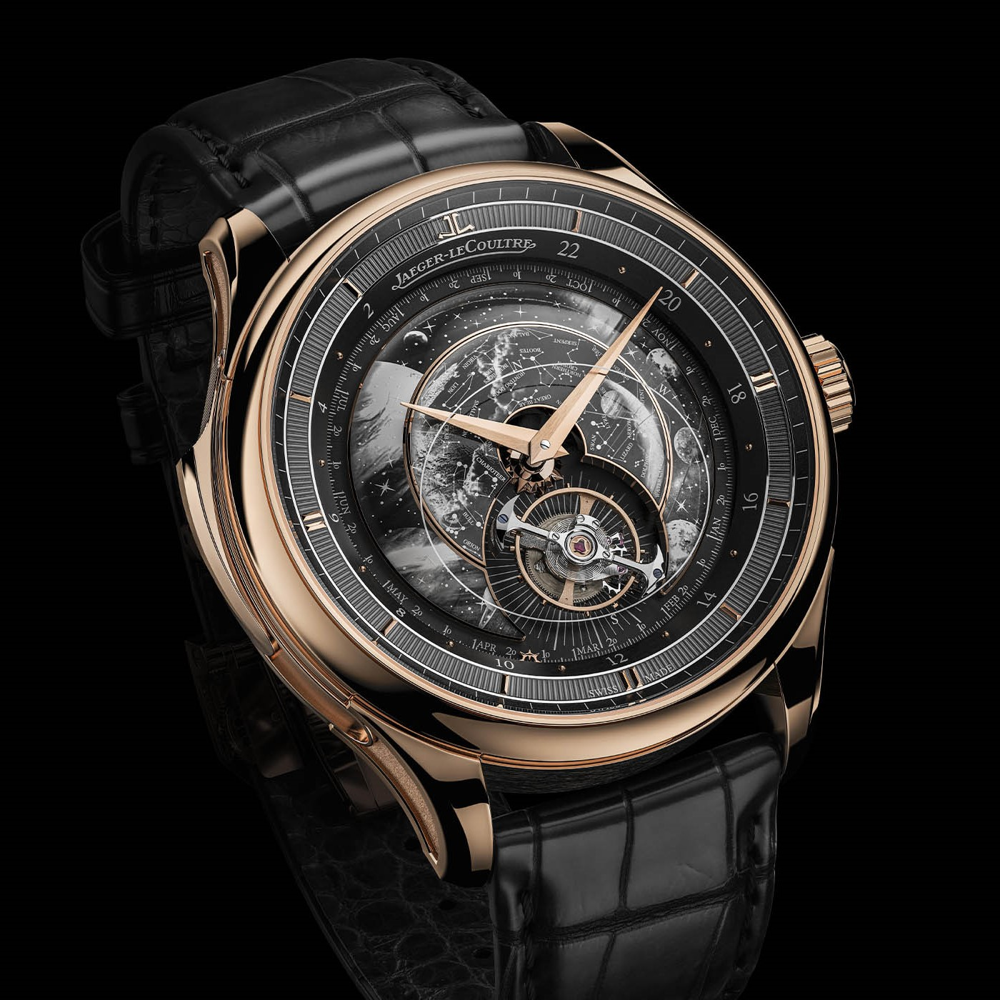
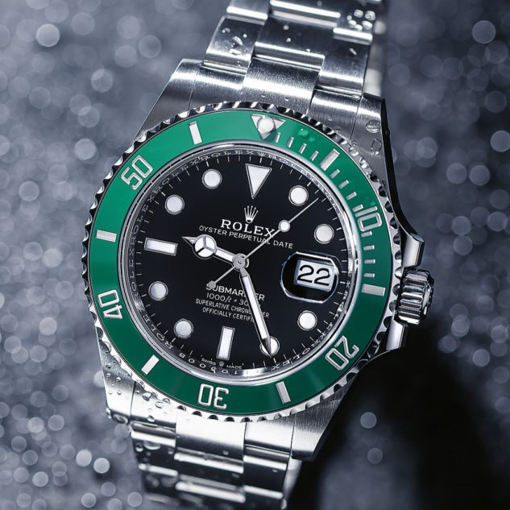
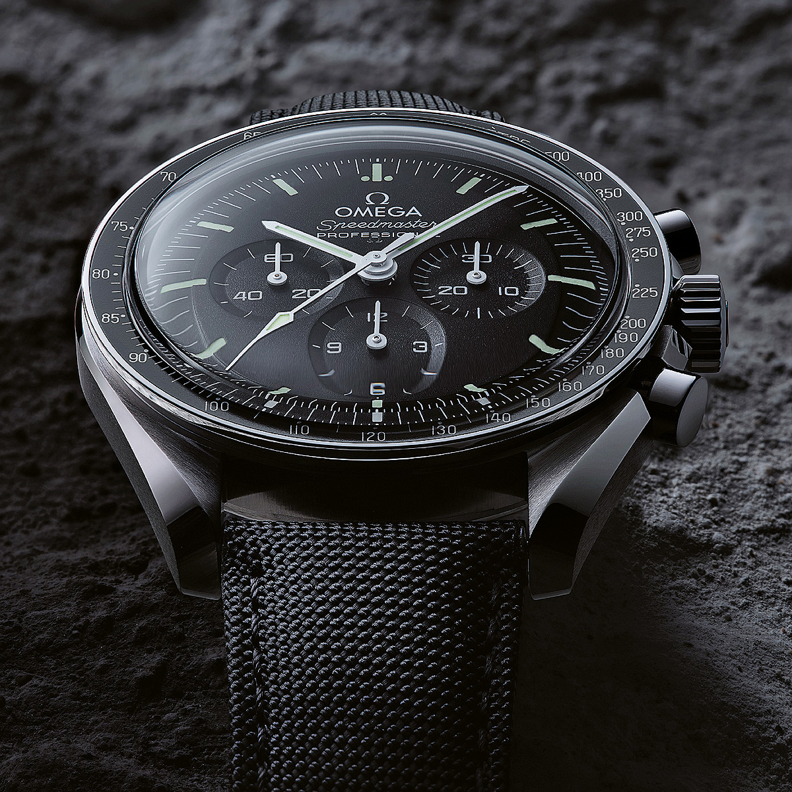
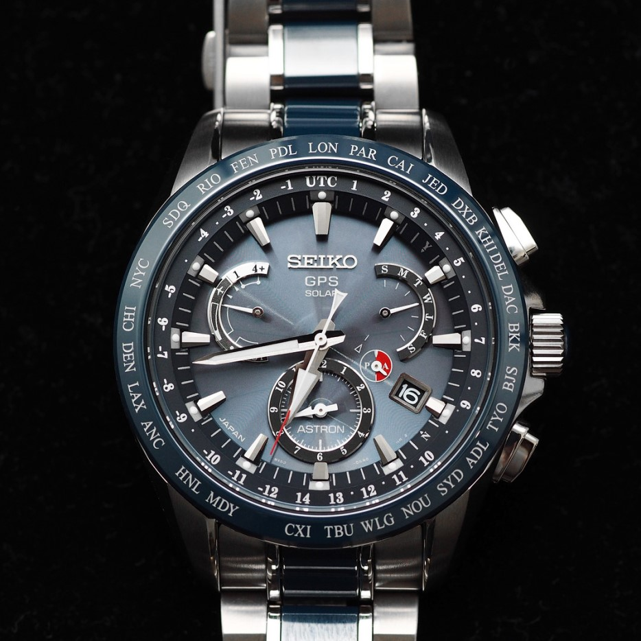

The most recognized wristwatches in history
The Cartier Santos watch is considered the first watch designed for the wrist. At the end of the 19th century and the beginning of the 20th century, people wore pocket watches. In 1904, at the request of the Franco-Brazilian aviator Alberto Santos, Cartier developed one of the first known wristwatches – the Cartier Santos.

The Swiss watch brand Jaeger LeCoultre has revolutionized this industry with many innovations over time. For example, they invented the smallest watch caliber in the world and designed the most complicated wristwatch. One of the most expensive men's watches in the world is the extraordinary Hybris Mechanica à Grande Sonnerie.
Since 1954, the Oyster Perpetual Submariner has been by far the most important watch in the Rolex collection. The first waterproof watch in the world, the Oyster, was created by Rolex in 1926. However, the first Oyster Submariner was presented to the public in 1954 at the Basel watch fair and is considered "a classic among wristwatches".


The Speedmaster wristwatch, also known as the "Moonwatch" or "Speedy", was launched over half a century ago and is one of the most famous watches in the world. For over half a century, the Omega Speedmaster has witnessed events that have tested the limits of physical endurance and human courage, including the first moon landing in July 1969.
Launched in 1969, the Seiko Astron watch became the first mass-produced quartz display wristwatch. Using signals from GPS satellites, the Seiko Astron watch instantly adjusts to 39 time zones around the world. Setting the correct local time and date from anywhere on the planet is now possible at the push of a single button.
